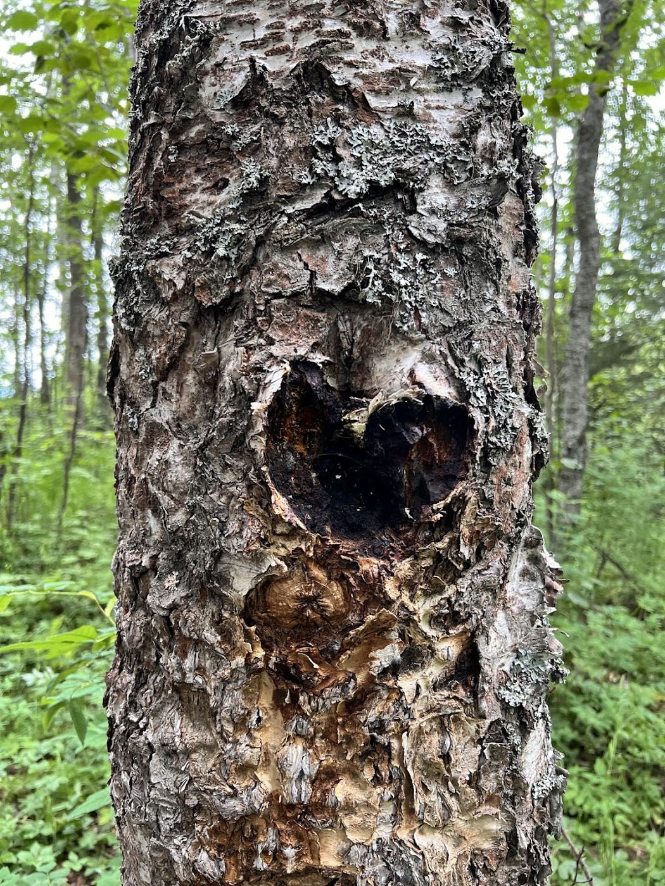
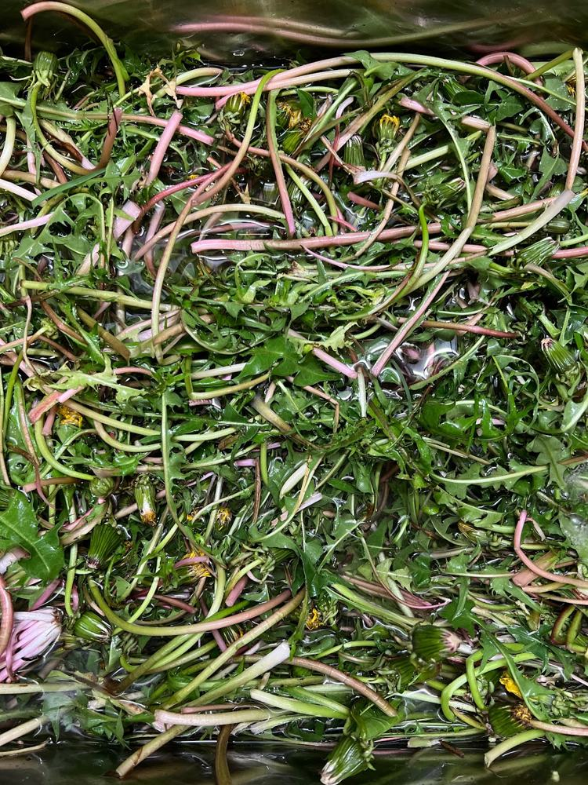

Ones that look great on a phone and get you found on Google.
Invoices, schedules, worker hours. Out of the notebook, onto your phone.
Slow site? Broken form? I'll sort it out and keep it running.
You tell me what's going on.
Something real to click before I build the rest.
One clear price. No disappearing.

By day I build check-in systems for a major airline: software that has to work every single time. Local businesses almost never get that kind of care. I think they should.
Off the clock I'm into natural healing, and I share what I learn at Earthy Mujer.
Tell me what you need. First call's free, no pressure.